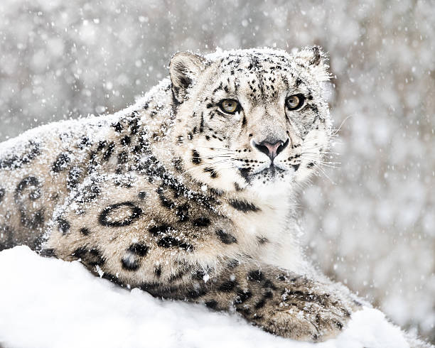

adИ́рбис, или сне́жный барс, или снежный леопард (лат. Panthera uncia, ранее — лат. Uncia uncia) — крупное
хищное млекопитающее семейства кошачьих, обитающее в горах Центральной Азии. Единственный современный
представитель семейства, проживающий исключительно в холодном климате.
Ирбис отличается тонким, длинным, гибким телом, относительно короткими лапами, небольшой головой и очень
длинным
хвостом. Достигая вместе с хвостом длины 200—230 см, имеет массу до 55 кг. Окраска меха светлая
дымчато-серая с
кольцеобразными и сплошными тёмными пятнами.
В силу труднодоступности местообитания и низкой плотности вида до сих пор остаются малоисследованными многие
аспекты его биологии.
В настоящее время численность ирбисов катастрофически мала — популяция вида в 2003 году по различным оценкам
составляла от 4 до 7 тысяч особей, в 2020 году от 2,7 до 3,4 тысяч. В XX веке он был внесён в Красную
книгу МСОП, в Красную книгу России, а также в охранные документы других стран. Охота на снежного барса
запрещена
во всех странах, где он обитает, снежный барс также внесён в приложение I Конвенции CITES (международный
запрет
на торговлю исчезающими видами животных и их частями). С 2013 года 12 странами, где обитает снежный барс,
принята «Глобальная программа по сохранению снежного барса и его экосистем», предусматривающая специальные
меры
по его сохранению (борьба с браконьерством, создание особо охраняемых природных территорий, субсидирование
фермеров в случае потери домашнего скота от снежного барса и т. д.)